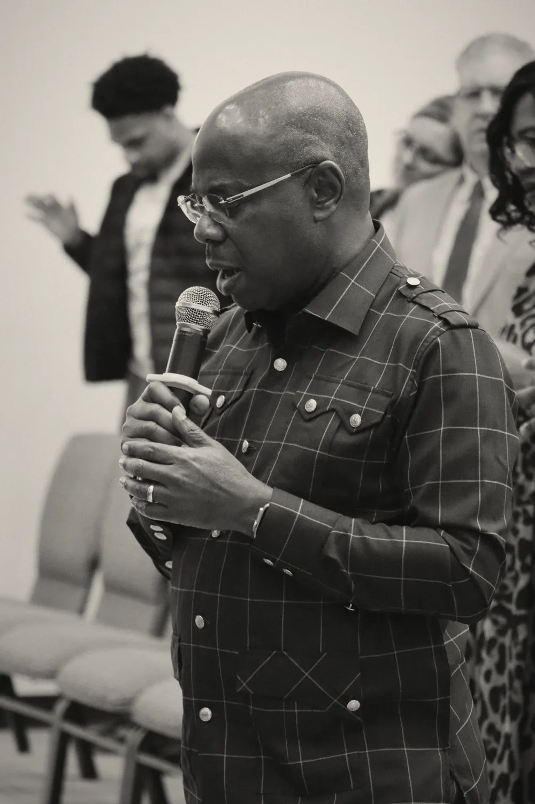

Called together
Two lives surrendered to Christ, joined in marriage and in ministry since 1995. Their calling has carried them across continents — and home, to Houston.

i. The Visionary
PastorJoel Uzoma
A man of unshakable faith toward God, who does not see anything as impossible with Him.
Pastor Joel Uzoma was saved by Jesus Christ in 1990, and from that very moment began to experience a regenerated life in Christ. With it came a strong zeal to understand the Word of God and the principles of His Kingdom — and, by grace, within a few years of his conversion he became a gifted teacher of the Word.
A graduate of Electronics & Computer Engineering, he answered the Lord’s call into ministry in 1995. He went on to post-graduate study in Biblical Theology, later returning to the same Bible College as a lecturer. He has pastored continuously since 1999, and has planted churches in both Africa and the United States of America.
A passionate writer with deep insight and revelation knowledge, he unlocks the truth embedded in Scripture so that believers may understand the mysteries of God’s Kingdom — and build the capacity to live by them daily. He is also a songwriter and composer, with two worship albums released across Spotify, Apple Music, YouTube, Amazon and more.
- 1990Gave his life to Jesus Christ
- 1995Called into ministry; married Pastor Funmi Uzoma
- 1999Began pastoring — a work that continues today
- 2008Published Understanding Shall Preserve You
- 2011Published You Are Coming Out Better
“With Godall thingsare possible.”Matthew 19:26

ii. The Woman of Faith
PastorFunmi Uzoma
She has a way of igniting the people she meets with the power of God’s Word.
Pastor Funmi Uzoma gave her life to Christ in 1985 in Lagos, Nigeria, and has served God fervently ever since. She holds that God has the final verdict on every issue of life — and she lives accordingly.
A graduate of Accounting with a Master of Arts in Ministry, she is an ordained pastor of The Redeemed Christian Church of God. Skilful, gifted and visionary, she has served faithfully alongside her husband since the inception of their ministry in 1995, and is the author of Powerful Confessions for Victorious Christian Living.
Each day she broadcasts a Christian devotional to her neighbourhood and across her social platforms — a steady word of faith for those beginning their morning. She and Pastor Joel are blessed with a son.
- 1985Gave her life to Christ in Lagos, Nigeria
- 1995Entered ministry alongside Pastor Joel
- TodayDaily devotional broadcast — Faith Declarations